Local review · current S0-approved increment integrated. Berkeley S72 and bounded T4 ADMM170 remain receiver accepted; original LR10 and the separate LR300 diagnostic retain their distinct identities.
Input snapshot: mcl_s0_to_v_presentation_inputs_r3_v1@2026-10-05T03:57:54.309662+00:00. Input version: BERKELEY_CENTRAL_TWO_TILE_URBAN_SUBAREA_R2; frozen configuration SHA-256 f73c4abc3f73bdcca09f582c69242e9f7c655ac8002dcabc683882be9a3262d5.
Scope and model instance
The Berkeley case concerns a 3.884 km² union of two research tiles covering downtown, the edge of UC Berkeley and a western residential corridor. Thirteen clipped tract zones describe this bounded urban area. Neither campus property nor the complete city or Bay Area is the demand boundary.
The modeled movement is one-way HBW during a weekday 08:00–09:00 local hour. A single forward calculation passes generated persons into a gravity distribution, an OD-specific mode model and static road assignment. Congested assignment times are not fed back into destination or mode choice. University location provides context, not a surveyed campus demand sample.
Inputs and preparation
A larger 10.803 km² acquisition envelope was used to find candidate blocks and transit stops. For demand, however, a block contributes only if its official internal point lies inside a model zone. This discrete selection gives 31,821 residents from the 2020 Census and 16,583 primary workplace jobs from 2023 LODES WAC. Housing units are a separate field and were not relabelled as households.
The 4 October 2026 OSM/GMNS source has 8,991 physical links in the earlier preflight. The current automobile model retains 2,150 directed links after access and restriction screening. The node-based solver cannot express every one of the 41 recorded restriction relations. Its conservative policy removes 105 links on restriction from-ways, thereby preventing prohibited transitions but also eliminating some otherwise lawful alternatives. Another 21 auto links fail access screening.
Eleven zones have an auto access node in the retained strong component, while all thirteen have a walking node. These are engineering connections rather than certified parcel entrances or accessible crossings. The inherited F01 shows preflight road geography and is kept separate from the current flow result.

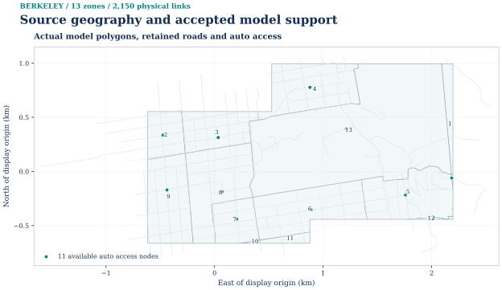
SVG · PNG · PDF · Plot data · Source record

Population and workplace-source geography
The maps separate 2020 residents from 2023 primary jobs. Both use the same complete 13-zone indexing as the generation and OD tables. Counts follow the saved source-block internal-point selection; the color maps do not imply density or local empirical calibration.

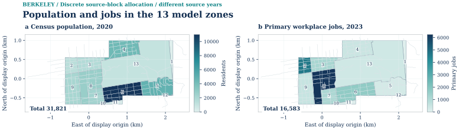
SVG · PNG · PDF · Plot data · Source record

Scheduled transit: geography, availability and time
The source geography, direct-OD availability and selected-day service profile are distinct evidence. The following figures use scheduled AC Transit source derivatives and the accepted direct-option table; they do not use private GPS traces or mix the retained BART date into the mode-choice input.

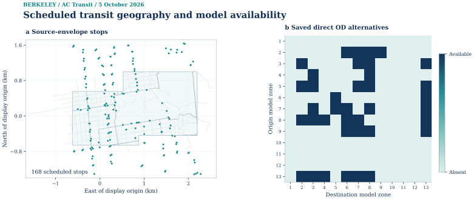
SVG · PNG · PDF · Plot data · Source record


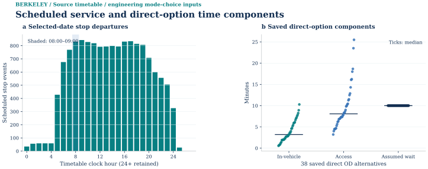
SVG · PNG · PDF · Plot data · Source record

01 / Trip generation
Generation assumes 0.65 one-way HBW movements per resident per day and allocates 35% to the morning hour. The resulting total is 7,239.2775 person trips. A 35% capture fraction and a 6% intrazonal fraction of captured demand determine the boundary ledger; none of these shares is locally estimated.
The ledger records 4,705.530375 external or uncaptured trips, 152.0248275 intrazonal trips and 2,381.7222975 internal interzonal trips. Resident counts determine production mass and primary jobs determine attraction weights. Their aggregate equality is imposed by balancing, so similar regional totals do not imply identical zonal patterns. The generation figure keeps all thirteen zones.
Trip generation

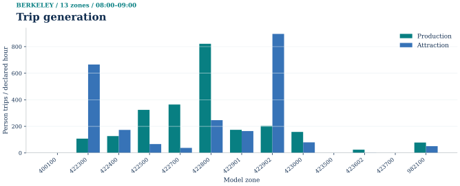
Description, units and scope
Saved productions and job-weighted attractions for all 13 model zones. Population and jobs use different source years (2020 and 2023). The captured interzonal total is 2,381.7222975 person trips in 08:00–09:00; 4,705.530375 external/uncaptured and 152.0248275 intrazonal person trips remain separate. This bounded engineering scenario is not locally calibrated. Single-pass engineering scenario; no local empirical calibration.
PNG · SVG · PDF · Source record

02 / Trip distribution
Unlike the road-impedance choices in some other cities, this case uses directed shortest times on the screened walking graph for its gravity distribution. The exponential deterrence parameter is 0.04 per minute. IPF respects the feasible pair set; disconnected pairs remain zero instead of receiving an artificially large finite travel time.
Seven balancing iterations produce a maximum margin residual of 2.14531534×10⁻⁵ persons. The 2,381.7222975 PA persons are converted once using a 90% forward and 10% reverse share. There are ninety positive directed person OD pairs. The matrix panel retains thirteen-zone context; its companion distribution panel concerns positive OD quantities. Neither panel is a top-ten substitute for the full demand.
Trip distribution

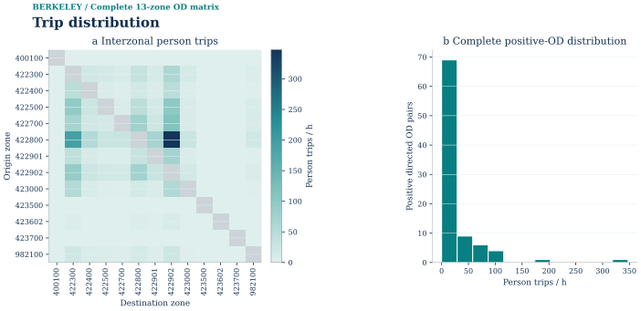
Description, units and scope
The complete saved 13 × 13 one-hour HBW matrix has 90 positive directed OD pairs. Pale cells are structural zero interzonal demand; the gray diagonal excludes intrazonal demand. All 156 interzonal impedance records are available. The full positive-OD histogram retains 12 bins; saved PA and OD totals agree at 2,381.7222975 person trips/h, with seven IPF iterations and a maximum margin residual of 2.1453153408401704e-05. Single-pass engineering scenario; no local empirical calibration.
PNG · SVG · PDF · Source record

03 / Mode choice
Available drive, direct AC Transit and walk alternatives compete through OD-specific generalized costs. Driving adds an assumed five minutes of access and a USD 2 charge. Walking uses the screened OSM graph. The AC Transit input is a direct scheduled option from feed S1000256 for 5 October 2026, with stop-to-walk-network snapping limited to 120 m.
Transit is available on 38 directed zone pairs. Its assumed wait is ten minutes and its fare USD 2.50. The scenario values time at USD 20/hour and uses logit sensitivity 0.07 per generalized minute with zero alternative constants. BART's retained sample belongs to 24 August 2026, so it is not mixed into the selected-day calculation. Bear Transit PDF maps remain documentary context, and transfers are not modeled.
Every internal interzonal person has at least one implemented alternative. The aggregate choices are approximately 1,238.96 drive, 169.67 transit and 973.09 walk persons, totaling 2,381.72. Drive persons are divided once by occupancy 1.30 and multiplied by PCE 1.0, yielding 953.049842714 PCE. Seventy-two OD pairs have positive vehicle demand, even though ninety have positive person demand. This difference follows from availability and mode choice; it is not unexplained OD removal.
Mode choice

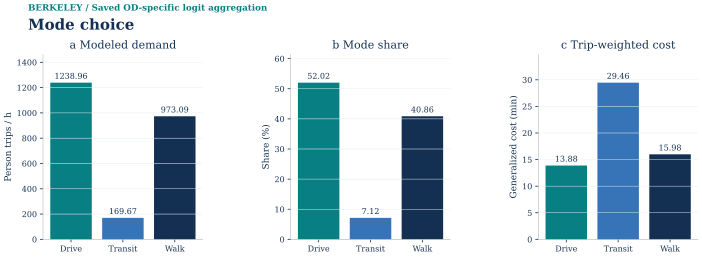
Description, units and scope
Saved OD-specific logit probabilities apply only over available alternatives. Modeled one-hour demand is 1,238.9647955 drive, 169.6685413 direct-transit and 973.0889606 walk person trips; shares and trip-weighted generalized costs are copied from frozen plotdata. Direct AC Transit is available for a subset of zone pairs. All costs and behavior remain engineering assumptions, without a local behavioral fit. Single-pass engineering scenario; no local empirical calibration.
PNG · SVG · PDF · Source record

04 / Physical-link assignment
The road solver receives all seventy-two positive vehicle OD pairs unchanged. BPR uses α=0.15 and β=4; absent capacity observations are replaced by declared per-lane proxies, with source speeds where available and facility-class values elsewhere. The model represents static travel-time response, not finite-hour queue storage.
The initial all-or-nothing flow has relative gap 1.6551133727449009×10⁻¹⁵ against tolerance 10⁻⁴. No subsequent FW update is required. The saved objective is 2,746.094414979 PCE-min, and 670 of 2,150 retained roads carry positive modeled flow. Maximum v/c is about 0.434. A valid initial stop at these assumed costs is not evidence about measured Berkeley congestion.
F13 preserves the distinct flow, v/c, travel-time and initial-check information of the original multipanel result. Its width must be handled by layout rather than flattening the map. The R3 geographic companion joins the same saved flows to frozen GMNS geometry. Restriction-based link removals can lengthen modeled routes, so neither map should be treated as precise legal navigation.

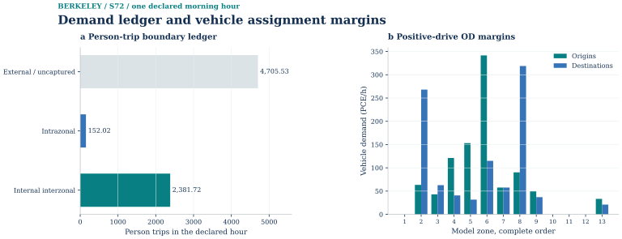
SVG · PNG · PDF · Plot data · Source record


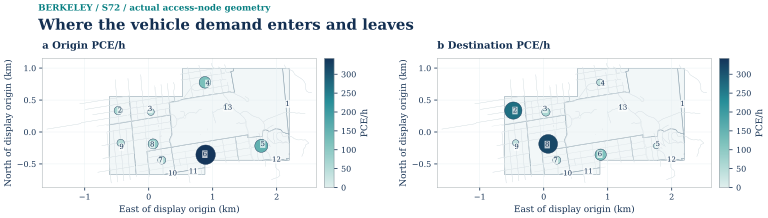
SVG · PNG · PDF · Plot data · Source record


SVG · PNG · PDF · Plot data · Caption · Source record · Same figure on homepage


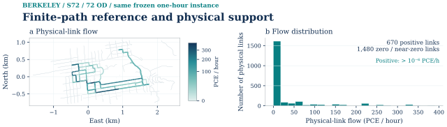
SVG · PNG · PDF · Plot data · Caption · Source record · Same figure on homepage


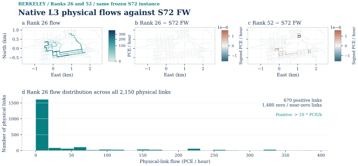
SVG · PNG · PDF · Plot data · Caption · Source record · Same figure on homepage

Original stopping, scalar comparison and flow diagnostics
Frank–Wolfe: the saved initial check

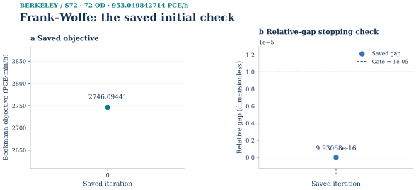
Only the actual saved iteration 0 is shown: objective 2746.09441497946 PCE·min/h and relative gap 9.93068023646942e-16, against the unchanged 1e-05 stopping gate. There were zero updates. Each panel contains a single numerical point; no missing trajectory or second state is inferred. The companion physical-flow map reads this method’s own saved vector. The saved signed gap numerator is 2.7284841053187847e−12 PCE·min/h; the independent endpoint evaluator remains a separate numerical evaluation.
SVG · PNG · PDF · Source data

Saved results and assignment checks
R3 saved-result replay passed. Fresh-solve acceptance and independent full-graph checks are supported by the earlier receiver evidence for the unchanged frozen inputs; R3 does not claim that it repeated that fresh solve. The recorded maximum node-conservation residual is 8.53×10⁻¹⁴ PCE.
The verifier reconstructs OD demand and link loading from saved paths, checks generation and distribution margins, recomputes probability and person/vehicle conversion, and checks BPR costs and the full-graph gap. Six negative fixtures reject missing upstream or current results, changed OD or probability values, and nonexistent zone or link references. Receipt hashes connect the stages without substituting a historical smoke output.
Static S72: finite paths and Native L3
This extension starts from the accepted one-hour Berkeley vehicle OD, retaining all 72 positive vehicle pairs and 953.049842714 PCE on the same 2,150-link conservative R2 graph. It does not regenerate demand or insert the local turn sidecar. The frozen K=5 pool has 360 legal paths (72 designated major, 288 minor). All comparisons below use the original BPR integral; the finite pool and complete solver graph have separate checks.
- Fresh Frank–Wolfe
- Initial check; 0 updates · 2746.0944149794555 · 4.96534e-16
- Finite-path SLSQP
- 360 paths; 1 iteration · 2746.0944149794555 · 4.96534e-16
- Native L3 rank 26
- 3 outer steps · 2746.094414979262 · −7.00113e-14
- Native L3 rank 52
- 3 outer steps · 2746.0944154632957 · 1.76101e-10
The independent checker rebuilt ordered path incidence, OD mass and physical-link flow, recomputed the BPR integral, then ran shortest paths on the entire declared graph at final costs. All four pass the original 1e-5 full-graph gap and original-coordinate feasibility gates. The tiny negative signed rank-26 gap is numerical evidence, not a negative traffic cost. The input-only initial vector built the Native basis; neither Native rank used the finite optimum as its basis.
Native ranks 26 and 52 have 98 and 124 path-representation coordinates (72 major plus rank), versus 360 finite-pool path coordinates. Each Native model also includes 2,150 explicit link variables, for raw totals of 2,248 and 2,274. This is a representation result, not a total-variable or speed advantage. Reconstructed minor-path mass is only about 1.23e-7 and 1.01e-5 PCE, so this input shows little diversion sensitivity.
Native L3: all 3 saved outer iterations

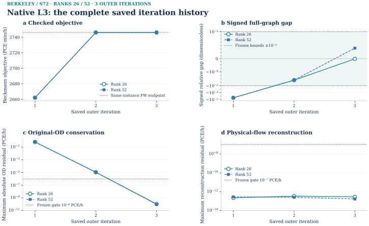
All 3 saved outer checks are plotted for each Native rank on the same frozen S72 instance (72 positive OD, 953.049842714 PCE/h). Each marker is an actual saved check at outer 1–3; the connecting segments do not add intermediate observations. Rank 26 uses open circles and rank 52 filled squares; near-coincident lines are both retained. Panels separate checked BPR/Beckmann objective, signed full-graph relative gap, maximum original-OD residual, and physical-flow reconstruction residual. The horizontal FW value is an independent same-instance endpoint, not an additional Native iteration. Early checked objectives lie below that endpoint while OD conservation has not yet reached its frozen gate; these are not feasible upper bounds or better traffic solutions. Signed negative gaps remain negative and are not interpreted as superior optimality. The gap axis is symmetric-log with a linear interval of ±10⁻¹²; OD/reconstruction axes are logarithmic in their original PCE/h units. The original gap bounds ±10⁻⁵, OD absolute gate 10⁻⁶ PCE/h, and reconstruction gate 10⁻⁷ PCE/h are unchanged. Both runs reach their original acceptance checks at outer 3; other relative-OD/nonnegativity gates remain in the source records. Berkeley objective values are taken from the per-outer checker; the independently evaluated public endpoint differs by at most 2.73×10⁻¹² PCE·min/h and is not substituted into this history. These early states belong to the ultimately accepted run; no separate failed trial is added. Endpoint comparison and method-specific physical-flow maps remain separate evidence. Private local preview of complete saved numerical history: public release currently covers endpoints, not these per-iteration values. Engineering scenario, not observed traffic or measured policy effect.

Original stopping, scalar comparison and flow diagnostics
Accepted static endpoints and feasibility

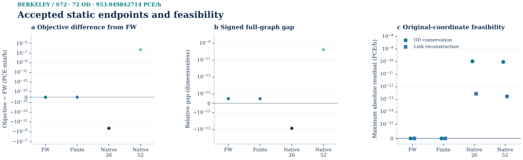
Independent accepted endpoints on S72 · 72 OD · 953.049842714 PCE/h. Panels show signed objective difference from the same-instance FW endpoint (2746.09441497946 PCE·min/h), signed full-graph relative gap, and maximum original-OD and link-reconstruction residuals. Categories are method identities, not iteration numbers; no connecting trajectory is drawn. The signed symmetric-log axes retain exact zeros and negative roundoff, with a linear interval of ±1e−15 in each panel’s stated unit. The accompanying method-specific physical-flow figures remain the map evidence; scalar agreement does not imply identical flow.
SVG · PNG · PDF · Source data

Original stopping, scalar comparison and flow diagnostics
Time-expanded network and path examples
Time-expanded network in layers

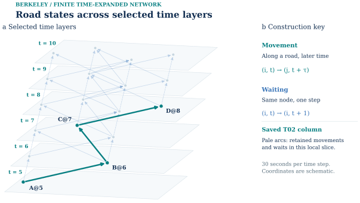
Complete evidence · same figure · SVG · PNG · PDF · Plot data · Source record · Caption

Local construction details

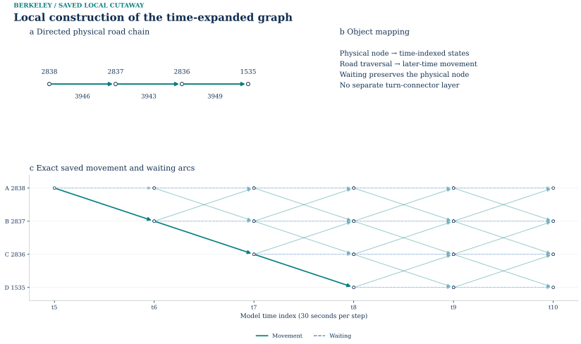
Complete evidence · same figure · SVG · PNG · PDF · Plot data · Source record · Caption

Finite-time construction: layers and an actual computed route
The local layered view and the complete computed route answer different questions. The first shows actual node-time incidence; the second follows the saved positive column and separates fixed objective cost, rounded model time and terminal bookkeeping time.

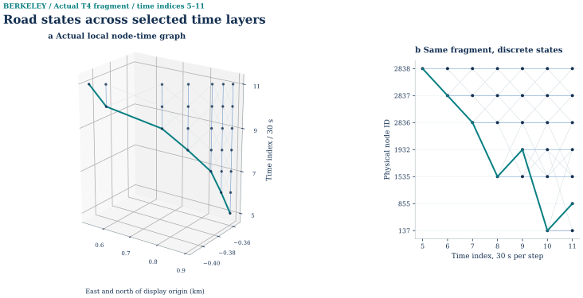
SVG · PNG · PDF · Plot data · Source record

Computed column: route, cost and model time

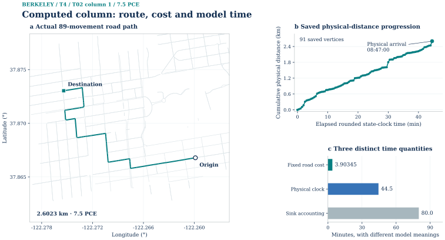
Description, units and scope
Saved positive T02 column 1 carries 7.5 PCE. Panel a joins all 89 saved, ordered movement link IDs to the real physical-road geometry; consecutive endpoints and time steps are verified. The map shows the route with nearby model roads as context, using longitude/latitude and a latitude-adjusted aspect ratio. Panel b retains all 91 supplied distance/time vertices for these movements; positions use the rounded 30-second state clock, not an observed trajectory. The path accumulates 2.6023 km, departs at 08:02:30 and physically arrives at 08:47:00 (44.5 elapsed minutes). Panel c separates the unchanged 3.90345 fixed objective minutes from that rounded elapsed time and the H165 sink at 09:22:30 (80 minutes after departure). The terminal sink is accounting, not extra physical travel. This is a computed route, not a schematic full time-layer network.
PNG · SVG · PDF · Source record

Finite-time T4: LP, CG, LR and ADMM
T4 is a separate bounded linear experiment on the same physical road graph. Four input-hash-selected OD pairs contribute only their assumed first five-minute departure pulse, 10.439304601026278 PCE at 08:02:30. The other hourly OD demand is outside T4. The 30-second step and H165 horizon yield 92,578 time states and 250,886 arcs after exact reachability pruning. Each road arc keeps original free-flow minutes as objective cost while its state-clock duration rounds up to 30-second steps; the H165 zero-cost sink is accounting after physical destination arrival.
The fixed-cost shared-capacity model has no queue storage, spillback, dynamic network loading feedback or observed second-by-second departure profile. T4 PCE·min objectives cannot be compared as the same mathematical objective with the nonlinear one-hour S72 Beckmann integral.
- Full arc-flow HiGHS LP
- 43.66742440800644 primal; 43.66742440800643 dual · Full admissible-arc, balance, capacity and reduced-cost check; gap ≈7.1e-15. The accepted process solved the unchanged LP.
- Two-phase column generation
- 43.667424408006426 primal and dual · Phase-I artificial flow zero; ten columns; exact full-DAG pricing, minimum reduced cost −4.44e-16 min.
- Lagrangian relaxation
- Extended diagnostic (300 iterations): valid lower 43.667424408006; feasible upper 43.667424408006 · Certified gap 0%; first 1% certificate at iteration 10. Original accepted run stops at 10; extension keeps its model and gate.
- ADMM, post-diagnostic C2a
- Its own x objective 43.66974694298355; same-T4 LP 43.66742440800644 · Relative objective difference 5.31869009587e-5 (0.00531869%), below unchanged 1e-4 gate.
The saved 7.5-PCE T02 column leaves at the assumed 08:02:30, uses 89 road movement arcs, incurs 3.90345 fixed objective minutes and reaches its physical destination at 08:47 by the rounded state clock (44.5 elapsed minutes). Its later 09:22:30 H165 sink is bookkeeping, not travel or a measured delay.
LP, CG and recovered LR physical flow

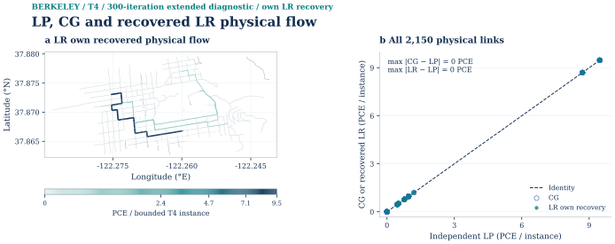
Description, units and scope
The 300-iteration same-rule cold-start LR diagnostic retains the original T4 model and the official 1% gate, first met at iteration 10. The map uses LR’s own selected feasible recovery (saved recovery iteration 10), joined by physical-link ID to all 2,150 road geometries. The scatter includes every road ID and compares the unchanged independent LP and CG projections with the selected LR projection. Maximum absolute differences from LP are 0 PCE for CG and 0 PCE for LR. The stored aggregate physical projections coincide exactly in this instance. Colors and widths use PowerNorm(0.5), retaining the absolute scale used by the existing ADMM–LP map unless new values require a larger maximum. The 137 physical links with no admitted T4 movement arc remain distinct as dotted background links. Flows are PCE over the bounded departure instance, not PCE/hour. The original accepted 10-iteration evidence is retained separately. No LP flow was substituted for the LR recovery. © OpenStreetMap contributors, ODbL 1.0. Independent diagnostic audit passed. The extended saved record passed all 23 original formal-entry checks.
PNG · SVG · PDF · Source record

Column generation: feasibility, objective and closure

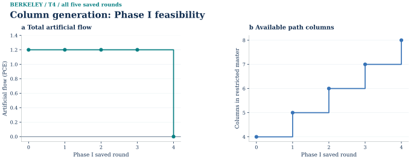
SVG · PNG · PDF · Plot data · Source record


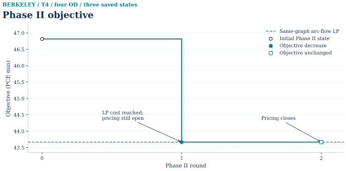
SVG · PNG · PDF · Plot data · Source record


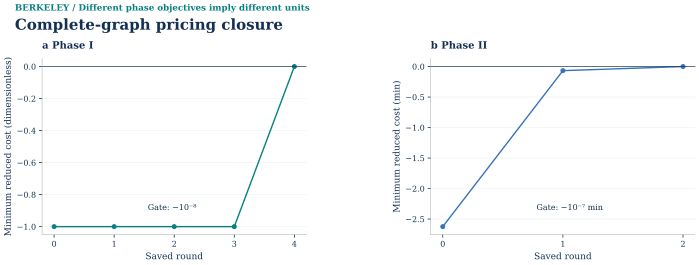
SVG · PNG · PDF · Plot data · Source record

Retained combined CG figure and original complete source links
Lagrangian relaxation: bounds, prices and recovery
Current LR reception · S0 batch_v001
S0 received the existing formal PASS for the separate 300-iteration cold-start LR diagnostic and reused its duplicate package identity. All 23 original formal-entry checks passed. The original ten-iteration run remains the accepted 1% result; LR300 is not checkpoint continuation and is not a new result from uploading the same package again.
The best lower first improves at iteration 19 and reaches 43.66742440800643 PCE·min at iteration 256. At iteration 300 the current dual is 43.66228345703368 PCE·min, distinct from the running best. The recovered upper is 43.667424408006426 PCE·min; a reported zero gap means floating-point closure. The existing figure order and original LR10 evidence remain intact.
© OpenStreetMap contributors; road-derived data are subject to ODbL 1.0. Berkeley T4 is the frozen 30-second/H165 engineering instance. ADMM170 is a post-diagnostic C2a result; LR300 is a separate post-certificate cold-start diagnostic and does not replace accepted LR10. These results are not observed traffic, DNL/DUE or local demand calibration.
Released LR300 plot data · Current acceptance and release summary · Source and scope notice.
The same-rule cold-start LR record contains 300 actual iterations. Its unchanged 1% certificate is first met at iteration 10; final best lower and feasible upper agree at approximately 43.66742440801 PCE·min. The 23 original formal-entry checks pass. The separate original ten-iteration run retains its own stopping decision.
Lagrangian bounds and certified gap

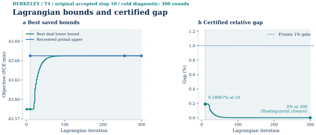
Description, units and scope
The original accepted run remains separately preserved at iteration 10. This view uses 300 actual saved records from run BERKELEY_T4_LR_EXTENDED_DIAGNOSTIC_R1, through iteration 300. The extended trace is a diagnostic experiment and does not retroactively change the original stopping decision. Independent diagnostic audit passed. The 300-round saved record passed all 23 original formal-entry checks. The formal 1% certificate is first met at saved iteration 10; later rounds, when present, are shaded as post-gate diagnostics. Teal denotes the saved best dual lower bound and blue the separately recovered feasible upper. The right panel shows 100 times the saved dimensionless certificate on a linear percentage axis, against the unchanged gate. Missing upper/gap records remain unplotted. Final best lower is 43.66742440800643 PCE·min; best upper is 43.66742440800643 PCE·min and gap is 0%. The highest saved best bound first appears at iteration 256. The final current relaxed dual is separately 43.66228345703368 PCE·min; it is not substituted for the running best bound. The certificate is max(0, (U−L)/max(1,|U|)). The final signed U−L is -7.10543e-15 PCE·min. A saved zero gap here denotes numerical agreement at floating-point precision, not an algebraic proof of exact equality. The independent LP scalar remains in metadata and is not substituted for an LR upper bound. No smoothing, invented points, or optimizer calls are used by this renderer.
PNG · SVG · PDF · Source record

Lagrangian prices and relaxed capacity violations

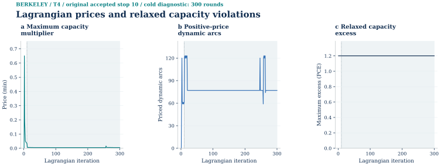
Description, units and scope
The original accepted run remains separately preserved at iteration 10. This view uses 300 actual saved records from run BERKELEY_T4_LR_EXTENDED_DIAGNOSTIC_R1, through iteration 300. The extended trace is a diagnostic experiment and does not retroactively change the original stopping decision. Independent diagnostic audit passed. The 300-round saved record passed all 23 original formal-entry checks. The formal 1% certificate is first met at saved iteration 10; later rounds, when present, are shaded as post-gate diagnostics. Every saved current-iterate maximum capacity multiplier, strictly positive multiplier count and maximum relaxed capacity excess is shown. Multiplier units are minutes, from a PCE·min objective divided by a PCE capacity; relaxed excess is PCE. These current-iterate summaries are distinct from the saved best-dual multiplier state. Relaxed excess is not the feasibility residual of separately recovered primal flow. A closed best-bound certificate does not imply that subsequent current multipliers stop changing; the full diagnostic retains those changes. No smoothing or per-arc history is inferred.
PNG · SVG · PDF · Source record

Path-pool growth and separate primal recovery

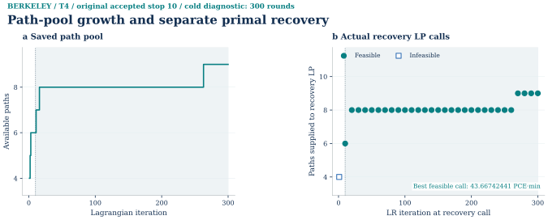
Description, units and scope
The original accepted run remains separately preserved at iteration 10. This view uses 300 actual saved records from run BERKELEY_T4_LR_EXTENDED_DIAGNOSTIC_R1, through iteration 300. The extended trace is a diagnostic experiment and does not retroactively change the original stopping decision. Independent diagnostic audit passed. The 300-round saved record passed all 23 original formal-entry checks. The formal 1% certificate is first met at saved iteration 10; later rounds, when present, are shaded as post-gate diagnostics. Panel a retains all 300 saved path-pool sizes; panel b shows exactly 31 actual recovery calls (30 feasible, 1 infeasible). Filled circles are feasible calls and open squares are infeasible calls. Null objectives remain missing and are never zero-imputed. Pool growth is not a sequence of feasible upper bounds. The call records and own recovered physical flow retain their separate source identities.
PNG · SVG · PDF · Source record

Retained combined LR figure and original complete source links
Accepted T4 ADMM accuracy continuation
S0 received · batch_v001, 7 October 2026. ADMM C2a outer170 reuses the prior formal PASS. The three released original figures are linked beneath the existing V displays; the established figure order is preserved.
The finite Berkeley T4 experiment uses four first-bin OD pulses on the frozen 92,578-state, 250,886-arc, 30-second/H165 time-expanded graph. Its demand, arc order, fixed cost, shared capacities and input-derived rho (0.131931364425587) are the same as in the corrected R1 and C1 records. The static four-stage model and the finite T4 LP, CG and LR certificates were not recomputed. Earlier C1 repaired a genuine local quadratic-subproblem defect by exact source-to-sink DAG variable elimination, local node numbering and a potential gauge. That repair took the same T4 from zero outer iterations to a saved 38-outer state, where all internal R3 gates passed but the ADMM objective was still 4.3879087e-4 relatively above the same-instance LP, missing the original 1e-4 gate.
Why the continuation was needed
The C1 driver stopped when its own primal, dual and capacity criteria were met. The external same-instance LP comparison was an independent acceptance gate and was not part of that internal stop. Repeating the old driver would therefore stop at outer 38 again. This R3 continuation preserved the exact C1 local QP, projection, scaled-dual update and fixed rho, and tightened only internal absolute/relative residual tolerances to 1e-6/1e-5 for C2a. It restored the complete C1 post-dual-update state, recomputed the next local target from z−w and began at outer 39. A separate small-fixture execution showed exact equality of 5 uninterrupted outer updates and 2 saved plus 3 resumed updates in all six state arrays, objective and residuals. This is a seen-case, post-diagnostic accuracy experiment; the staged stop rule was frozen before the new T4 run.
The 50, 100 and 150 outer checkpoints were registered as observations, not as a search for the most favorable objective. At outer 100, the relative LP difference was 1.11306e-4 and the new dual and capacity gates were still unmet. At outer 150, the saved objective difference had fallen below 1e-4, but the new dual stop remained unmet. The solver continued to its own complete C2a endpoint at outer 170; no C2b extension or rho change was needed. The C1 history 1–38 is retained byte-for-byte in the parent bundle and shown as an explicit boundary in the figures. Later history consists only of actual saved updates.
Original-coordinate acceptance
The selected C2a x flow has objective 43.669746942984 PCE·min, compared with the independently accepted same-graph LP optimum 43.667424408006 PCE·min. The absolute relative difference is 5.3186900959e-05, below the frozen 1e-4 gate. The independent evaluator recomputed every commodity's source and sink balance, nonnegativity, forbidden-connector flow, shared capacity, x−z primal residual, rho-weighted dual residual, capacity projection, scaled-dual update, full original-coordinate local KKT, objective and physical-link back projection. All 18 original gates in the saved check are true; this is a result from ADMM's own x, not a substitution from LP, CG or LR.
The new internal stop is separate: primal 0.00092678345 versus 0.0017258811, dual 0.00082762004 versus 0.0010021451. The process-tree RSS peak was 574,197,760 bytes, below the inherited 687,203,942-byte ceiling, and the stage completed within its newly registered 7,200-second continuation budget. C2a used 132 new outer iterations after the 38 C1 updates, so its cumulative endpoint remains inside the original 300-outer count. The larger wall allowance is disclosed as new R3 computation effort, not retroactively attributed to C1.
Reproduction and interpretation
The frozen C2 driver, T4 CSVs, original C1 parent state, C2a endpoint and full saved iteration rows are in the Private Full archive. The formal read-only replay entry rehashes inputs, validates saved state and stage identity, and launches an optimizer-free original-coordinate check outside the protected extraction. Fresh shortest-path initialization confirmation is PASS; formal corrupted-copy tests are 12/12 rejected. The fixed graph, costs and H165 sink bookkeeping do not constitute a measured queue, dynamic network loading or a Berkeley travel-time calibration. S0 batch_v001 has now received the accepted identity and released this prose, the three original summary figure families and the separate LR300 plot data with their notices. This website integration performs no new scientific computation.
© OpenStreetMap contributors; road-derived data are subject to ODbL 1.0. Berkeley T4 is the frozen 30-second/H165 engineering instance. ADMM170 is a post-diagnostic C2a result; LR300 is a separate post-certificate cold-start diagnostic and does not replace accepted LR10. These results are not observed traffic, DNL/DUE or local demand calibration. Current acceptance and release summary · Source and scope notice.
ADMM convergence and objective agreement

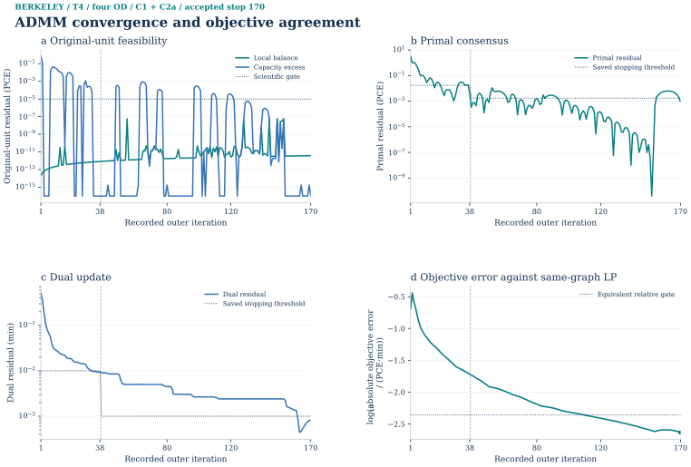
Description, units and scope
Accepted Berkeley T4 ADMM saved history, all 170 recorded outer iterations. The four panels follow the current Boston/Hong Kong diagnostic objects: original-unit balance and capacity feasibility, primal consensus, dual update, and log10 absolute objective error against the independent LP on the same T4 graph. Balance/capacity and primal residuals are PCE. The dual residual is rho times the consensus change and is in minutes: rho has min/PCE units. The dotted scientific feasibility gate is 1e-5 PCE; the internal thresholds are the recorded values. The objective gate line is the unchanged 1e-4 relative criterion expressed on the absolute-error axis. Only exact-zero feasibility values use a display value of 1e-16 PCE; every positive value, including smaller positives, is retained unchanged. The vertical separator is after C1 outer 38; C2a contributes 132 further updates under its disclosed new wall budget. The actual trace ends at 170; the registered 300-outer ceiling is not an extrapolated trace. Final own-x objective is 43.66974694298355 PCE·min against LP 43.66742440800644 PCE·min, absolute difference 0.00232253497711 PCE·min and relative difference 0.00531869%. Objective agreement is separate from physical-link flow agreement. No smoothing, interpolation or solver call.
PNG · SVG · PDF · Source record

Optimization on the time-expanded network
Commodity conservation at the final state

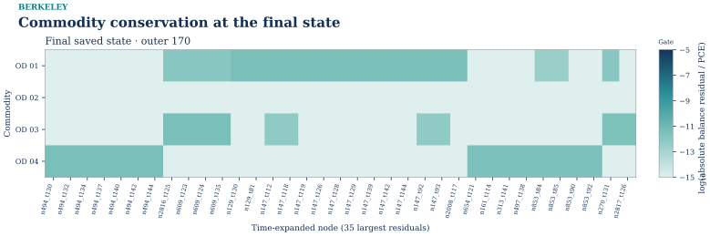
Complete evidence · same figure · SVG · PNG · PDF · Plot data · Source record · Caption

ADMM and LP physical-link flow

Description, units and scope
Saved Berkeley T4 physical-link projections for four assumed first-bin OD pulses (10.439304601 PCE), using the accepted ADMM own x at completed outer 170 and an independently solved same-graph LP. Panels a–b share a PowerNorm(0.5) absolute color scale. Panel c uses a separate symmetric ADMM-minus-LP scale; panel d contains all 2,150matched physical IDs and an identity line. The maximum physical-flow difference is 0.990967760238112 PCE, despite a relative objective difference of 0.00531869%. The objective gate does not establish link-flow equality. All 2,150 original road geometries are retained with longitude/latitude aspect correction. The 137 links without a movement arc in the bounded T4 graph remain zero and are shown dotted; missing sparse LP entries are zero-filled by physical ID. Flows are PCE over this bounded departure instance, not hourly counts or observed traffic. No optimizer was rerun. © OpenStreetMap contributors, ODbL 1.0.
PNG · SVG · PDF · Source record

The movement-only backprojection uses the accepted ADMM x and the independent LP on the same finite graph. All 2,150 physical links are retained in the comparison, including 137 with no movement arc in T4. The maximum absolute ADMM–LP physical-link difference is 0.990967760238112 PCE; agreement in objective value does not establish a unique or identical link-flow vector.
How to read the method figures
The updated views use the same compact layout, blue–teal palette and DejaVu Serif font as the current Boston and Hong Kong atlas. They are derived from saved Berkeley data. S72 remains a one-hour nonlinear static instance; T4 remains a separate four-OD fixed-cost finite graph.
| Evidence | Displayed quantities | Interpretation |
|---|---|---|
| Static / Native | Physical-link flow, distribution, signed objective/gap diagnostics and representation dimensions | Use actual method-specific saved vectors. Small deviations do not establish speedup or a hard compression benchmark. |
| CG / LR | Artificial flow, objective, reduced cost, valid lower/feasible upper bounds, gap, pool and saved recovery | Keep phases and units separate. Missing primal results stay missing; no iteration is invented. |
| ADMM residuals | Balance/capacity and primal in PCE; dual in min | Each residual has its own scientific or recorded stopping threshold. Rho has min/PCE units. |
| ADMM objective | Absolute error in PCE·min and dimensionless LP-relative error | Hong Kong uses log10 absolute error; Boston retains raw objective versus LP. Berkeley provides the absolute and relative views explicitly. Its gate remains 1e-4. |
| ADMM / LP maps | Movement-only physical-link PCE, signed difference and all-link scatter | Shared absolute scales and a separate symmetric difference scale; objective agreement is not flow identity. |
Original accepted figures and captions remain accessible below each updated figure. Plotting functions, metrics and source-data guide.
The additional source, population, transit, demand-margin, endpoint, time-layer and separated CG/LR figures use the same selected functions and styles. Detailed figure-to-function and metric guide · Python renderer · Input identities.
Reproduction and input identity
R6 LR update: the separately audited 300-iteration diagnostic, full saved history, multiplier timing and all five figure families are provided in the extended-diagnostic plotting guide. The original R1 commands below reproduce the historical accepted 10-iteration LR result. R6 plotting uses the included saved data and does not launch a new solver. Current formal validation now passes all 23 checks; Formal 23-check report · Current LR handoff. Frozen R6 receipts and plotting inputs retain their at-export identity.
The page is a local reading candidate. Exact model inputs, checkpoints, solver source, private observation records and full compute archives are not distributed by this website. Scientific acceptance and permission to redistribute an asset are separate decisions; new algorithm assets remain subject to their item-level S0 release record.
Package identity and saved replay
Use the corrected R1 package for S72 and T4 LP/CG/LR, and the separate accuracy R3 package for the currently accepted ADMM endpoint. These archives have different historical ADMM outcomes. Extract each archive separately; preserve its directory structure and manifest. For a read-only replay, set PYTHONDONTWRITEBYTECODE=1 and direct output to a new directory outside the extraction.
| Archive and working directory | Saved replay | Expected result |
|---|---|---|
MCL_Berkeley_Algorithm_R1_Corrected_R2_Private_Full.zip; its berkeley_algorithm_transfer_r1 directory |
python verify_saved.py --output-root <external-replay-directory> |
Accepted S72 FW/finite/Native and T4 LP/CG/LR saved checks. Current ADMM reproduction uses the separate accepted R3 package. |
MCL_Berkeley_ADMM_Accuracy_R3_Private_Full.zip; extraction root |
python verify_saved.py --output-root <external-replay-directory> |
Exit 0 and PASS_ACCEPTED; ACCEPTED_BOUNDED_BERKELEY_T4_ADMM_POST_DIAGNOSTIC, cumulative outer 170, relative LP difference approximately 5.31869009587e-5. |
The corrected R1 ZIP SHA-256 is 709a8490078a12c54958bc43d1824e72bca1cf4869522d9ffd242fb2ec6703a3; the accuracy R3 ZIP SHA-256 is eb67e2626cc5617d44d651f0645586d73c3ea0fdc0eec1ce16aae7d24b0eefa5. Both saved replay entries call no optimizer. The R3 receiver performed two formal saved replays and 12/12 corrupted-copy formal-entry rejection tests. Original four-stage saved replay and its six negative fixtures are a separate evidence set.
Fresh S72 and T4 LP/CG/LR solves
The following are documented commands, not work performed by the website. Run only in a separate writable copy of corrected R1. Bind $basePython to the compatible existing controller Python, $guard to the original mcl_batch_guard.py, and $locks to the existing shared coordination directory. The wrapper acquires that original heavy lock and refuses an existing output path. Do not create a second lock pool. Run one selected method at a time.
& $basePython .\rebuild_selected.py S_FW --output .\fresh_S_FW --guard $guard --lock-root $locks
& $basePython .\rebuild_selected.py S_finite --output .\fresh_S_finite --guard $guard --lock-root $locks
& $basePython .\rebuild_selected.py S_Native26 --output .\fresh_S_Native26 --guard $guard --lock-root $locks --worker-python $nativePython --ipopt $ipopt
& $basePython .\rebuild_selected.py S_Native52 --output .\fresh_S_Native52 --guard $guard --lock-root $locks --worker-python $nativePython --ipopt $ipopt
& $basePython .\rebuild_selected.py T_LP --output .\fresh_T_LP --guard $guard --lock-root $locks
& $basePython .\rebuild_selected.py T_CG --output .\fresh_T_CG --guard $guard --lock-root $locks
& $basePython .\rebuild_selected.py T_LR --output .\fresh_T_LR --guard $guard --lock-root $locks
Native additionally requires the existing compatible worker Python and IPOPT binary through $nativePython and $ipopt . The packaged S_paths , S_basis26 and S_basis52 selections reproduce the K=5 pool and input-only bases. Selected Native solves use the frozen corresponding pool/basis; neither basis is built from the finite optimum. Use the dedicated R3 continuation commands for the current ADMM result.
LR's solve-dual result is a lower-bound record. Recover its own-column feasible primal and evaluate the certificate as separate steps, under the same original shared heavy guard:
& $basePython $guard --root $locks --kind heavy --timeout 7200 --wait 600 --cwd (Get-Location).Path -- $basePython .\source\time\lr\cli.py recover-primal --case .\runs\T_case\case_manifest.json --run .\fresh_T_LR --output .\fresh_T_LR_recovery
& $basePython $guard --root $locks --kind heavy --timeout 7200 --wait 600 --cwd (Get-Location).Path -- $basePython .\source\time\lr\cli.py evaluate --case .\runs\T_case\case_manifest.json --run .\fresh_T_LR --plan .\T_LR_PLAN.json --recovery .\fresh_T_LR_recovery --output .\fresh_T_LR_evaluation.json
- S72 FW / finite reference
- Objective 2746.0944149794555 PCE·min; signed complete-graph gap approximately 4.96534e-16 ; FW 0 updates, finite 1 iteration.
- S72 Native rank 26 / 52
- Objectives 2746.094414979262 / 2746.0944154632957 PCE·min; original-coordinate feasibility and original 1e-5 complete-graph gap gate; 3 outer steps each.
- T4 LP
- Primal 43.66742440800644 , dual 43.66742440800643 PCE·min; complete admissible-arc and primal-dual checks.
- T4 CG
- 43.667424408006426 PCE·min; zero Phase-I artificial flow, 10 columns, complete-DAG pricing and minimum reduced cost approximately −4.44e-16 min.
- T4 LR
- Original accepted 10-iteration replay: Valid lower 43.58459836422644 , feasible upper 43.667424408006426 PCE·min; certified relative gap approximately 0.1896747% , below 1% . The separate R6 extended diagnostic is reported above; this replay retains the original stopping rule.
Compare new results with the frozen input signatures and independent original-coordinate checks, not only a solver's success message. Different methods can return different arc-by-arc primal flows on this linear problem while satisfying the same optimality or accuracy certificate. Do not overwrite packaged accepted results to make a new run resemble the reference.
Fresh ADMM R3 continuation and cold confirmation
In a separate writable copy of the accuracy R3 extraction, C2a resumes the immutable input/C1_checkpoint after outer 38. It uses the frozen plan's absolute/relative internal tolerances 1e-6/1e-5, fixed input-derived rho 0.13193136442558714, cumulative ceiling 300, new solver wall budget 7,200 s and process-tree RSS ceiling 687,203,942 bytes. The saved outer monitor used 7,300 s to cover process overhead. The objective gate remains 1e-4. C2b was a registered contingency and is not the selected accepted result.
With the same $basePython, original $guard and $locks, the following preserves the saved monitor interfaces and places new reports in fresh paths:
$r3 = (Get-Location).Path
& $basePython $guard --root $locks --kind heavy --timeout 7400 --wait 600 --cwd $r3 -- $basePython .\resource_monitor.py --report .\fresh_monitor\resource.json --stdout .\fresh_monitor\stdout.log --stderr .\fresh_monitor\stderr.log --memory-bytes 687203942 --wall-seconds 7300 -- $basePython .\source\admm_solver_accuracy.py --stage C2a --parent .\input\C1_checkpoint --output .\fresh_C2a
& $basePython .\check_stage_endpoint.py --checkpoint .\fresh_C2a\final_checkpoint --resource .\fresh_monitor\resource.json --output-root .\fresh_C2a_check
For a fresh initialization confirmation, use the same guard and resource monitor with new report filenames, replacing the inner solver command with python confirm_cold.py --stage C2a --output .\fresh_cold_confirmation. Its initialization uses input-cost shortest paths, not LP flow. check_cold_confirmation.py is a saved-package checker with fixed packaged paths; it does not accept a fresh-output path argument. The receiver compared the provider's six saved arrays (x, z, w, z_previous, local_q, potential) rather than rerunning that cold solve in the browser.
The accepted reference endpoint is cumulative outer 170 (38 parent + 132 new), own-x objective 43.66974694298355 PCE·min and relative LP difference 5.31869009587e-5 = 0.00531869%. The objective threshold was first reached at outer 110; that did not mean every stop condition passed at 110. Outer 170 is the actual terminal state. Require NUMERIC_PASS_WITH_NEW_INTERNAL_STOP, every original scientific/resource gate, and both new internal stop checks in the fresh endpoint report. check_stage_endpoint.py returning zero means it read a valid saved endpoint; by itself it does not mean that endpoint passed all gates. Fresh run timings are new measurements, not the provider's recorded timings.
Recorded environments and public boundary
The original four-stage producer used Python 3.11.4, NetworkX 3.1, Shapely 2.1.2, pyproj 3.7.2, Matplotlib 3.7.1 and NumPy 1.24.3. S72 Native used a separate Python 3.9.25 worker with NumPy 2.0.2, SciPy 1.13.1, Pyomo 6.9.5 and IPOPT/MUMPS; its controller and LP/CG/LR used the existing base environment described in corrected R1 REPRODUCE.md. Accuracy R3's DEPENDENCY_LOCK.json records Python 3.11.4, NumPy 1.24.3, SciPy 1.10.1, Matplotlib 3.7.1 and psutil 5.9.0, with BLAS thread counts set to one. The archives do not bundle interpreters or IPOPT and do not establish platform-independent binary reproduction.
This website exposes only the current local reading assets and item-level permitted public material. It does not include private Full ZIPs, checkpoints, precise GPS traces, camera pins, evidence SQLite databases or a runnable public compute package. S72's one-hour nonlinear assignment and T4's four-OD first-pulse fixed-cost experiment retain their separate scope and result meaning.
Local turn engineering candidate
This bounded sidecar is separate from the accepted R2 conservative deletion and from the saved OD/FW result.
Local turn engineering candidate

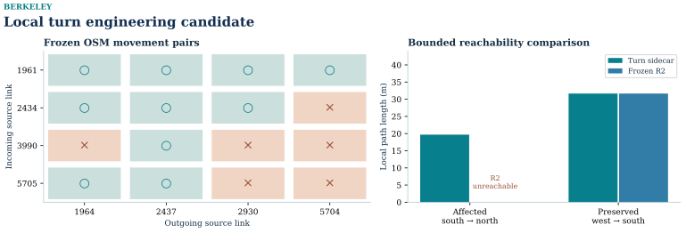
Description, units and scope
Local turn engineering candidate Shattuck / Center. 6 prohibited of 16 directed pairs at one frozen via node. Engineering variant; no assignment or policy effect.
PNG · SVG · PDF · Source record


Observation and mapping evidence
The separate Berkeley evidence R2 processed a rights-recorded 2009 Commons view and two public OSM GPS clips (22 and 21 points) with frozen-window map matching. Their matched directed connections were 12/12 and 11/11; 95th-percentile lateral distances were 10.60 m and 6.70 m. Modes and surveyed route truth remain unknown. Precise traces, camera pins, original photos, S2 trace cells and the offline inspector stay in the private evidence package; they are not reproduced here.
On the frozen source-to-R2 bridge, 134 of 170 source auto links matched exact R2 physical identities and 36 remained removed by the accepted policy or access screen. The E v001 S2 12/14/16 mapping covered 62 typed objects; local read-only multi-table query and parent/direct roll-up/weight checks passed in the private evidence record. These object and trajectory joins help locate model objects; they do not calibrate OD, road capacity, traffic counts or observed travel time. The public Shattuck/Center figure above is the S0 v002 released local engineering candidate, not a replacement solver graph.
The private evidence Full includes the frozen SQLite database and SQL. Its read-only E v001 query entry is python mcl_e_core.py query --input-root . --output-root queries/output --database private/evidence.sqlite --sql queries/object_to_model.sql --output-name object_to_model.csv; the accepted run returned 21 object-to-model rows with a receipt. The turn query returned 16 rows. These counts and the saved-state verification are reproducible from the private package, while the database and precise trace rows remain outside this page.
Figure coverage and evidence still needed
The nine-stage sequence now follows the Boston/Hong Kong reading order. A missing experiment or unsaved internal history is identified below; neither is filled with a substitute city or a fabricated curve. Existing full source tables, accepted endpoints and earlier composite figures remain available.
| Unavailable comparison or panel | Current evidence and reason | Input needed |
|---|---|---|
| A multi-iteration Frank–Wolfe convergence trajectory | Accepted S72 history contains one initial check and zero updates. A truthful one-point objective/gap figure is supplied; there is no saved multi-step curve to redraw. | A separately accepted run that actually performs FW updates and preserves its full history. The current accepted one-point run must not be relabelled as a convergence series. |
| Same-S72 Algorithm B result and convergence figure | The accepted Berkeley transfer contains FW, finite full-path SLSQP and Native L3 rank-26/rank-52 results. It does not contain an accepted Algorithm B result for this exact identity. | An accepted Algorithm B run on the identical S72 graph, demand, cost and gate, with endpoint flow, iteration history and independent full-graph checks. |
| CG Phase-I per-OD artificial-flow heatmap | All five saved aggregate artificial-flow values and per-OD reduced-cost values exist, but the per-OD artificial-flow trajectory is not saved. Reduced costs are not artificial flows. | Per-OD artificial variables from every saved Phase-I restricted-master solve, bound to round and OD IDs. |
| Saved mode-response sensitivity experiment | The accepted four-stage case saves one OD-specific mode-choice scenario, with drive/direct-transit/walk probabilities and totals. No accepted fare, time, or parameter perturbation sweep is present. | A declared and verified sensitivity sweep with the varied variable, unchanged controls and all saved alternative probabilities, or approval for a separate new experiment. |
| Public observed GPS trace and photo panels comparable to the Boston/Hong Kong observation cards | Berkeley has separately documented private photo/GPS/map-matching evidence, but the current page explicitly excludes precise traces, camera pins, original photos, S2 trace cells and the private inspector. The new transit figures therefore use scheduled public-source derivatives only. | A reviewed release-safe observation derivative with explicit rights, privacy treatment and trace-to-model provenance. No additional private/raw material is needed for the scheduled-service figures already supplied. |
| Finite full-path optimizer iteration curve | Finite SLSQP has an accepted endpoint and one reported iteration, but no per-iteration objective/feasibility series is retained. Its full endpoint comparison and flow evidence are preserved. | Saved callback history from that exact finite-path run, or a separately accepted instrumented run; a terminal result is insufficient to reconstruct the internal trajectory. |
Model limits and observations
This is a conservative restriction-screened engineering network, not a complete turn-aware representation. It lacks locally estimated HBW and utility parameters, observed OD, independent link counts and certified pedestrian access. The 2020 population, 2023 workplace data and 2026 network do not constitute one common-year observation.
The transit option covers a direct-bus simplification only. Transfers, BART and Bear Transit are excluded from the selected-day choice model, and a successful stop snap is not proof of safe access. Walk and transit person demand is retained but is not capacity assigned.
The public assignment sidecar uses a portable evidence identifier for the node source. The original absolute-path sidecar remains protected as evidence, with its hash preserved. No frozen configuration or numerical result is edited to achieve that presentation cleanup. Source attribution follows Census TIGERweb, LEHD LODES, AC Transit feed documentation and © OpenStreetMap contributors under ODbL.
The preflight network drawing documents an earlier data layer, not an additional assignment experiment. University entrances, pedestrian legal movements and traffic counts were not field audited for this case. Consequently the presentation separates numerical verification from observed transport performance.